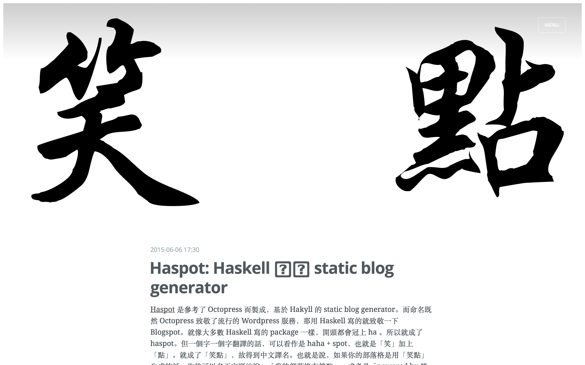

Haspot

Haspot
Haspot: A Hakyll blog generator with Casper theme as default
Haspot is a static site generator based on Hakyll, and it ported Ghost’s beautiful Casper theme. Once you install it, it is good to go.
Installation
First you have to install all of the dependencies. Most important one is hakyll. The most easiest way as the time of Feb 2016 is using stack. Make sure you have stack installed on your computer.
stack buildBuild and Launch page
stack exec haspot watch